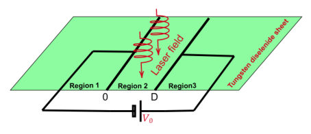
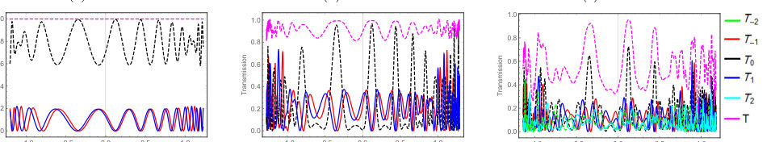
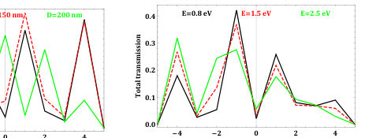

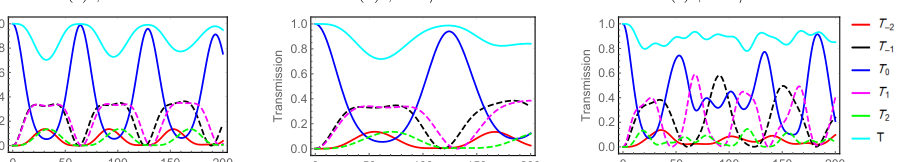
← Index · ← Previous · Next →
Authors: Dimpi Thakuria, Shuheng Liu, Giuseppe Vitagliano, Konrad Szymański
Type: theory · Category: quantum information and computing · PDF: https://arxiv.org/pdf/2605.11876v1
Analysis basis: full PDF text, analyzed in chunks
Topic relevance: entanglement & information structure 3/5 · quantum measurements 2/5
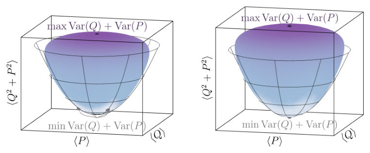
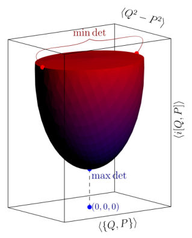
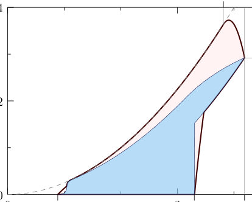
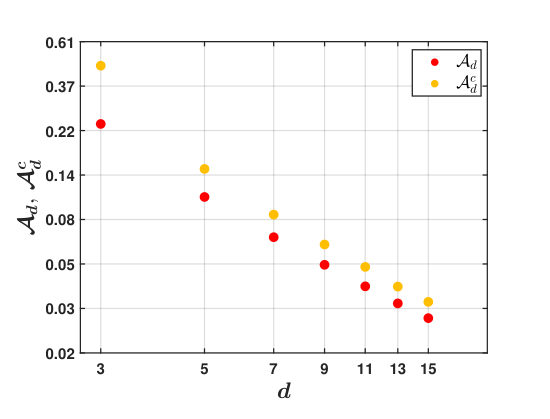
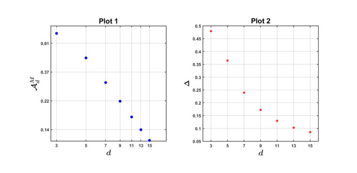
Summary. This paper characterizes the allowed region of covariance matrices for discrete position and momentum operators in finite dimensions. It establishes a systematic way to identify minimum-uncertainty states and provides new criteria for entanglement detection and multi-parameter quantum metrology.
Why it may be interesting. It provides a rigorous bridge between discrete-variable and continuous-variable quantum mechanics, offering new tools for entanglement detection and precision sensing in finite-dimensional systems.
Main problem. Characterizing the full uncertainty geometry (the set of achievable covariance matrices) for a finite-dimensional canonical pair of position and momentum observables.
Main result. The authors provide a complete geometric description of the trace-determinant region for these matrices, identifying extremal states and demonstrating that this discrete geometry approaches the continuous-variable limit as dimension increases.
Method. The study combines analytic arguments with convex-geometric and semidefinite-programming (SDP) methods based on joint numerical ranges and unitary invariants.
Model / system. Finite-dimensional Hilbert spaces of dimension d, using a canonical pair of observables related by the discrete Fourier transform (the discrete analogue of position and momentum).
Key observables. Position (Q) and momentum (P) analogues, covariance matrix (Gamma), trace and determinant of the covariance matrix, and the Quantum Fisher Information Matrix.
Important parameters / regimes. Dimension (d), trace (tr Gamma), determinant (det Gamma), and temperature (T) for noise models.
Assumptions / limitations. The focus is restricted to the preparation uncertainty viewpoint within finite-dimensional systems with bounded spectra.
Figures summary. Figure 1 shows joint numerical ranges for d=4 and d=5; Figure 3 displays the trace-determinant region; Figure 4 shows scaling of estimation bounds; Figure 5 shows the gap between restricted and unrestricted measurement accuracy; Figure 6 shows violation of the separability criterion.
Paper structure. The paper moves from the background of covariance matrices and Fourier-related observables to numerical tools like joint numerical ranges, followed by applications in multi-parameter metrology and bipartite entanglement detection.
Uncertainty relations are usually stated as bounds on selected combinations of variances, but the full covariance matrix contains substantially richer information about the geometry of quantum state space and about the operational capabilities of quantum systems. Here we characterize the covariance matrices attainable by a finite-dimensional canonical pair of observables related by the discrete Fourier transform, the natural analogue of position and momentum in a finite Hilbert space. We combine analytic arguments with convex-geometric and semidefinite-programming methods based on joint numerical ranges to describe the admissible region through unitary invariants, in particular the trace and determinant of the covariance matrix. This provides a systematic way to identify extremal states, generalizing the notion of minimum-uncertainty states, and to quantify how the discrete uncertainty geometry approaches its continuous counterpart with increasing dimension. We further show that the resulting covariance-matrix characterization has direct consequences for applications: it yields accuracy bounds for multi parameter estimation protocols and separability criteria for finite-dimensional bipartite systems, including discrete analogues of continuous-variable EPR-type witnesses. Our results establish a systematic and versatile platform for connecting uncertainty relations, convex quantum geometry, metrology, and entanglement detection in finite-dimensional systems.
Authors: Yiding Wang, Xiaofen Huang, Tinggui Zhang
Type: theory · Category: quantum information and computing · PDF: https://arxiv.org/pdf/2605.11399v1
Analysis basis: full PDF text, analyzed in chunks
Topic relevance: entanglement & information structure 3/5
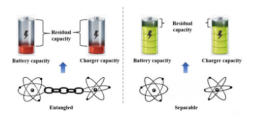
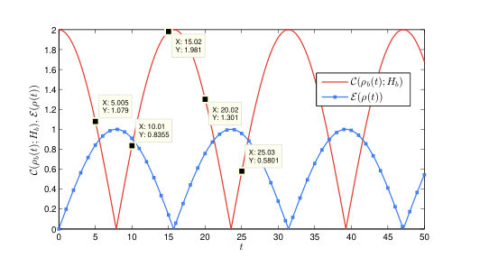
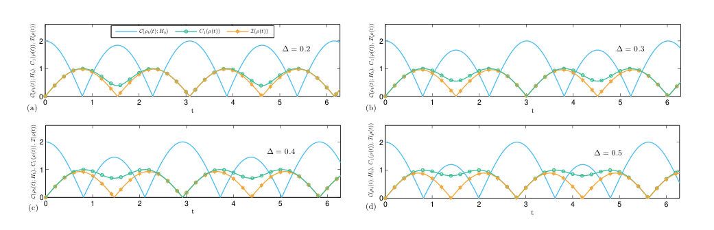
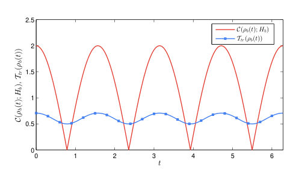
Summary. This paper explores how various quantum resources like entanglement and coherence affect the capacity of a two-qubit quantum battery. It reveals that while entanglement is necessary for energy transfer, it actually limits the maximum achievable battery capacity. The findings offer a theoretical framework for optimizing quantum energy storage systems.
Why it may be interesting. It provides fundamental insights into the trade-offs between quantum correlations and energy storage, which is crucial for designing efficient nanoscale quantum energy devices and understanding the role of entanglement in energy transfer.
Main problem. Investigating the fundamental correlations and trade-offs between quantum battery capacity and various quantum resources such as entanglement, steering, Bell nonlocality, and coherence.
Main result. The study establishes that battery capacity decreases monotonically with entanglement, steering, Bell nonlocality, and coherence, while showing a positive correlation with quantum state texture (QST).
Method. Analytical derivation of mathematical relationships between capacity and resources using the Heisenberg equation, majorization theory, and Schur-convexity, with numerical verification using QuTiP.
Model / system. A two-qubit system consisting of a battery spin and a charger spin with mutual coupling, governed by a Hamiltonian including spin flip-flop and Ising interactions.
Key observables. Quantum battery capacity, entanglement (concurrence), quantum steering, Bell nonlocality, quantum coherence, quantum imaginarity, and quantum state texture (QST).
Important parameters / regimes. System frequencies (omega_b, omega_c), coupling strengths (J1, J2), detuning (delta), and dephasing noise parameter (gamma).
Assumptions / limitations. The density matrix is assumed to remain in the X-form throughout the evolution, and the robustness analysis is specifically focused on the dephasing noise channel.
Figures summary. Figure 1 illustrates the system; Figure 2 shows the inverse relationship between capacity and entanglement; Figure 3 shows the dynamics of capacity, coherence, and imaginarity under different detunings; Figure 4 shows the correlation between QST and battery capacity.
Paper structure. The paper introduces the problem, defines the two-qubit Hamiltonian and resources, provides analytical theorems for capacity-resource correlations, analyzes the impact of detuning and dephasing noise, and concludes with future directions.
We investigate the relationship between quantum battery capacity and quantum resources in a two-qubit system consisting of mutually coupled battery and charger subsystems. We find that the battery capacity decreases monotonically with the quantum entanglement, steering, Bell nonlocality and coherence, and peaks when these four quantum resources vanish. Moreover, we reveal the capacity gap between the total system capacity and the sum of the battery and charger spin capacities, which is the residual battery capacity, and establish its positive correlation with entanglement. Furthermore, unlike the first four resources, although the battery capacity decreases monotonically with quantum imaginarity, its disappearance under system detuning does not guarantee a peak capacity, and this effect becomes more pronounced as the detuning increases. In contrast to the first five resources, the quantum state texture shows a positive correlation with battery capacity, but a negative correlation with entanglement, steering, Bell nonlocality, coherence, imaginarity, and residual battery capacity. These monotonic relationships are independent of the choice of system parameters. Our findings reveal the relationship between quantum battery capacity and quantum resources during the dynamic evolution of a quantum battery system, and advances the theory of quantum batteries and the development of quantum energy storage systems.
Authors: Rachid El Aitouni, Mohammed El Azar, Clarence Cortes, Pablo Díaz, David Laroze, Ahmed Jellal
Type: theory · Category: other · PDF: https://arxiv.org/pdf/2605.11737v1
Analysis basis: full PDF text, analyzed in chunks
Topic relevance: non-equilibrium dynamics 3/5




Summary. This paper explores how light-matter interaction can dynamically control quantum transport in WSe2. By using a laser field to induce Floquet sidebands, the researchers demonstrate a method to suppress Klein tunneling and tune electronic conductance, suggesting potential for new optoelectronic transistors.
Why it may be interesting. not directly relevant
Main problem. The study investigates how a linearly polarized laser field modifies the tunneling of Dirac fermions through a static electrostatic barrier in monolayer WSe2.
Main result. Laser irradiation induces a Floquet sideband structure that suppresses Klein tunneling and reduces conductance through energy renormalization (Stark-like states) and destructive interference.
Method. The authors use the Floquet formalism and the Landauer-Büttiker approach, employing a matrix formalism and Bessel function expansion to solve the time-periodic Hamiltonian.
Model / system. A monolayer of tungsten diselenide (WSe2) featuring a static potential barrier of height V0 and width D, subjected to a time-periodic electric field modeled via Peierls substitution.
Key observables. Transmission and reflection coefficients, conductance, current densities, and photon exchange numbers.
Important parameters / regimes. Laser parameter (alpha), barrier height (V0), barrier width (D), laser frequency (omega), and incident angle (phi).
Assumptions / limitations. The infinite-order Floquet problem is truncated to a finite number of modes, and higher-order Bessel functions for orders beyond the laser parameter alpha are neglected.
Figures summary. Figure 1 shows the system schematic; Figure 2 shows transmission vs. incident angle; Figure 3 illustrates photon exchange contributions; Figures 4-7 show transmission and conductance as functions of barrier width, laser parameter, and incident angle.
Paper structure. The paper introduces the WSe2 system, defines the time-periodic Hamiltonian, applies the Floquet formalism and matrix method, presents results on transmission and conductance, and discusses device implications.
We study the tunneling effect of Dirac fermions in a monolayer WSe$_2$ subjected to a static electrostatic barrier and irradiated by a linearly polarized laser field. Within the Floquet formalism, the time-periodic driving is incorporated to derive analytical wave functions across the three regions of the system. By enforcing continuity conditions at the interfaces, we obtain the transmission and reflection coefficients, which are then used to evaluate the conductance via the Büttiker approach. Our results reveal that the laser field induces a rich Floquet sideband structure, whose number and strength increase with the driving parameter $α$. This leads to a significant suppression of transmission and provides an efficient mechanism to overcome Klein tunneling. Moreover, increasing the width of the irradiated region enhances the interaction between fermions and the external field, resulting in energy renormalization and the formation of Stark-like confined states. The interaction between several Floquet channels creates strong interference effects, which reduce the transmitted current even further. The results demonstrate that light-matter interaction allows for the dynamic control of quantum transport in WSe$_2$ materials. This technology allows for the development of new optoelectronic devices, including tunable quantum filters and light-controlled nanoscale transistors.
Authors: Xiaolong Deng
Type: theory · Category: quantum information and computing · PDF: https://arxiv.org/pdf/2605.11860v1
Analysis basis: full PDF text, analyzed in chunks
Topic relevance: quantum measurements 3/5
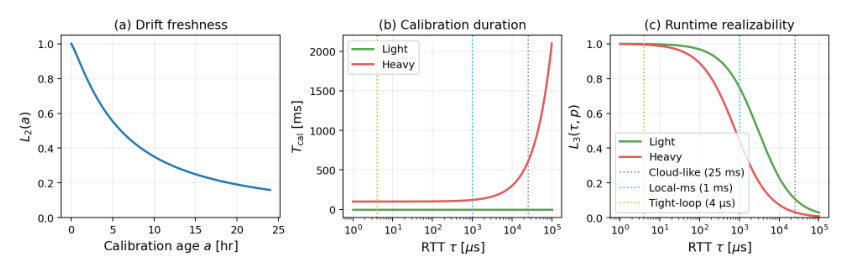
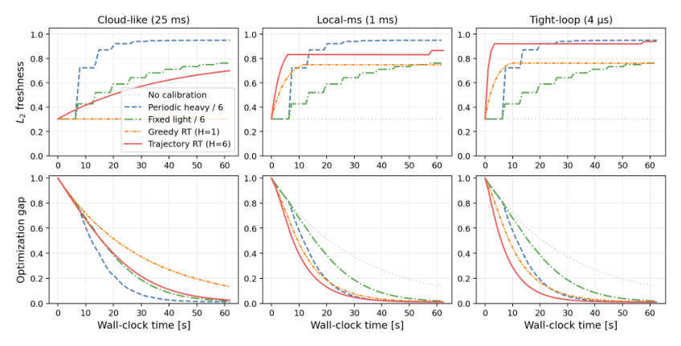
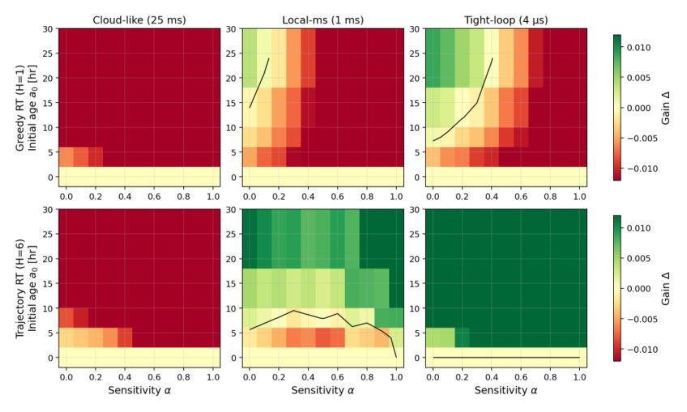
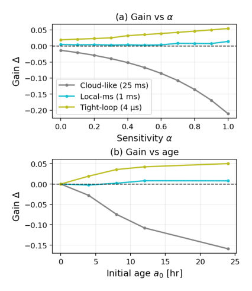
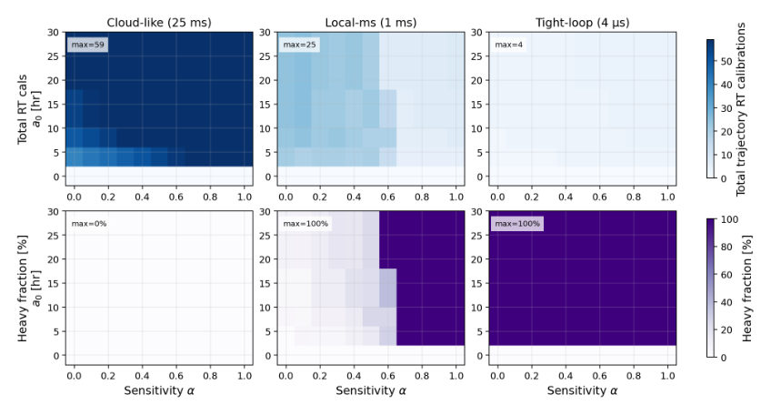
Summary. This paper proposes a new way to manage quantum hardware by treating calibration as a feedback control problem rather than a fixed schedule. It demonstrates that low-latency, tight-loop integration is essential for effectively counteracting hardware drift during variational quantum algorithms.
Why it may be interesting. It addresses the control-theoretic aspect of maintaining high-fidelity quantum operations in the presence of non-equilibrium drift, which is critical for the stability of open quantum systems in hybrid architectures.
Main problem. Optimizing the timing and type of runtime calibration in quantum-classical workflows to balance the wall-clock cost of calibration against the long-term benefit of reducing hardware drift.
Main result. The effectiveness of runtime feedback control is highly dependent on architectural latency, with tight-loop (microsecond) regimes providing the largest performance gains, whereas cloud-like (millisecond) latencies are generally uncompetitive.
Method. The authors formulate calibration as a state-trajectory feedback-control problem and employ a finite-horizon rollout controller to evaluate the future benefits of state-resetting actions.
Model / system. A hardware-agnostic, regime-level mechanism model representing superconducting quantum processors running variational workloads, where device 'freshness' decays according to a Hill-type drift map.
Key observables. Time-integrated optimization gap, device freshness (L2), and calibration service capacity.
Important parameters / regimes. Latency regimes (cloud-like 25ms, local-ms 1ms, tight-loop 4us), drift timescale (tau_drift), and algorithmic sensitivity (alpha).
Assumptions / limitations. The model uses a simplified scalar 'equivalent-age' variable to represent hardware degradation rather than tracking specific physical parameters like T1 or T2.
Figures summary. Figure 1 shows freshness decay and calibration cost scaling; Figure 2 illustrates the trade-off between calibration overhead and optimization gap; Figure 5 compares action types (light vs heavy) across regimes; Figure 6 shows sensitivity to classical loop timescales.
Paper structure. The paper defines the temporal dimension of calibration, introduces a phenomenological drift and recovery model, proposes a finite-horizon rollout control framework, compares this against various open-loop and greedy baselines across different latency regimes, and concludes with a scaling argument for multi-target capacity pressure.
In superconducting devices running variational workloads, gate and readout fidelities drift on hour timescales, while existing runtime schedulers treat backend quality as static. The temporal dimension of calibration remains unresolved. We formulate runtime calibration as a state-trajectory feedback-control problem under a fixed wall-clock budget, and investigate whether spending time on calibration now can improve the future optimization trajectory. Calibration quality proxy is represented as a drifting equivalent-age state, recovery action is modeled as costly state reset, and policies are evaluated by time-integrated optimization gap over the full execution window. Using a finite-horizon rollout controller, we compare feedback calibration against a strengthened family of open-loop baselines across three latency regimes: cloud-like (25 ms), local-millisecond (1 ms), and tight-loop (4 $\mathrmμ$s). The results show a clear ordering: cloud-like feedback is generally uncompetitive, while local-ms and tight-loop regimes open a positive-gain region that grows with workload quality-sensitivity and initial calibration age. Crucially, the gap between local-ms and tight-loop control is modest for single-target recovery. The advantage of tight-loop integration emerges under capacity pressure, when many calibration targets must be processed within the same control window.
Authors: Arne Loenders, Jacques Van Damme, Clement Godfrin, Paola Favia, Jacopo Franco, Thomas Van Caekenberghe, Bart Raes, Gulzat Jaliel, Sylvain Baudot, Luis Francisco Pinotti, Alexander Grill, George Simion, Kristof Moors, Vukan Levajac, Sofie Beyne, Sugandha Sharma, Stefan Kubicek, Yosuke Shimura, Roger Loo, Massimo Mongillo, Danny Wan, Kristiaan De Greve
Type: experiment · Category: quantum information and computing · PDF: https://arxiv.org/pdf/2605.12143v1
Analysis basis: full PDF text, analyzed in chunks
Topic relevance: QC/QI experiment 3/5
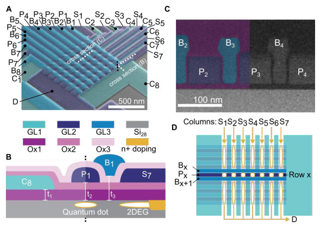
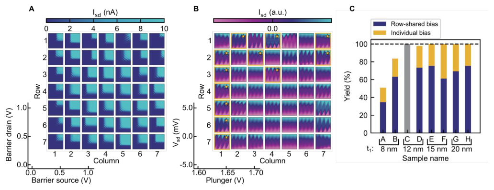
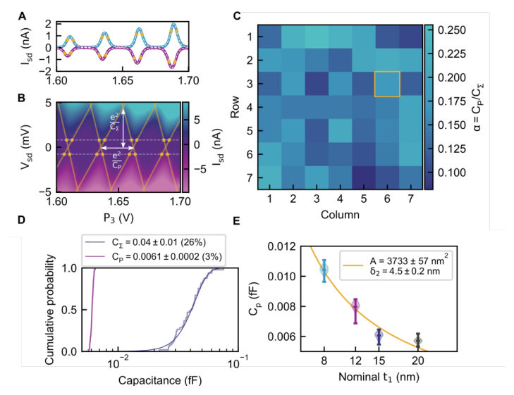
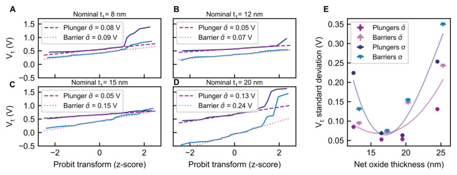
Summary. This study explores how the thickness of the gate oxide affects the uniformity of parameters in large-scale silicon quantum dot arrays. By finding an optimal thickness that minimizes threshold voltage fluctuations, the researchers provide critical design guidelines for building scalable semiconductor spin qubit architectures.
Why it may be interesting. not directly relevant
Main problem. Investigating how gate oxide thickness influences the uniformity and disorder in dense 2D silicon quantum dot arrays to enable scalable spin qubit control.
Main result. Identified an optimal SiO2 thickness of 17 nm that minimizes threshold voltage variability (standard deviation below 63 mV) by balancing competing effects of strain and defect density.
Method. Statistical characterization of 392 quantum dots using parallel row-based measurements and Coulomb diamond extraction across four different oxide thicknesses in a 300 mm CMOS-process architecture.
Model / system. A dense 7x7 array of Si-MOS quantum dots fabricated using EUV lithography on an enriched 28Si substrate, featuring an overlapping gate architecture with multiple dielectric layers.
Key observables. Threshold voltages (Vth), capacitances (Cp, C_sigma), lever arms, charging energies, and quantum dot yield.
Important parameters / regimes. Primary oxide thickness (t1) ranging from 8 nm to 20 nm; electron temperature (Te) approx 1.4 K; dot-to-dot pitch of 110 nm.
Assumptions / limitations. The optimization of oxide thickness for Vth stability may not necessarily optimize other parameters like valley splitting or charge noise; the findings are specific to the overlapping-gate architecture.
Figures summary. SEM and STEM images of the array and gate stack; schematic of parallel measurement; barrier maps and Coulomb diamonds for specific samples; statistical plots showing Vth variability and capacitance uniformity as a function of oxide thickness.
Paper structure. Introduction to the scalability challenge, followed by fabrication and architecture details, experimental measurement techniques, statistical results regarding device parameters, physical analysis of disorder mechanisms (strain vs. defects), and supplementary validation of experimental accuracy.
Achieving uniform and scalable control of semiconductor spin qubits remains a key challenge for large scale quantum computing. In this work, we investigate how gate oxide thickness influences uniformity in dense two dimensional silicon quantum dot arrays. Using a 7 x 7 array fabricated in a 300 mm CMOS-process patterned by EUV lithography, we statistically characterize 392 quantum dots across four different oxide thicknesses. The threshold voltages, capacitances, lever arms, and charging energies are extracted using parallel row based measurements and we identify an optimal SiO2 thickness of 17 nm that minimizes threshold voltage variability below 63 mV standard deviation. Our observations illustrate how multiple sources of disorder can introduce competing oxide-thickness dependencies, resulting in non-monotonic trends. These results provide key design guidelines for dense, scalable silicon spin qubit architectures.
Authors: Rudi B. P. Pietsch, Luciano Petruzziello, Martin B. Plenio
Type: theory · Category: other · PDF: https://arxiv.org/pdf/2605.12172v1
Analysis basis: full PDF text, analyzed in chunks
Topic relevance: Keldysh / 2PI / non-Gaussian methods 2/5 · correlated / nonlocal dissipation 2/5 · quantum measurements 2/5
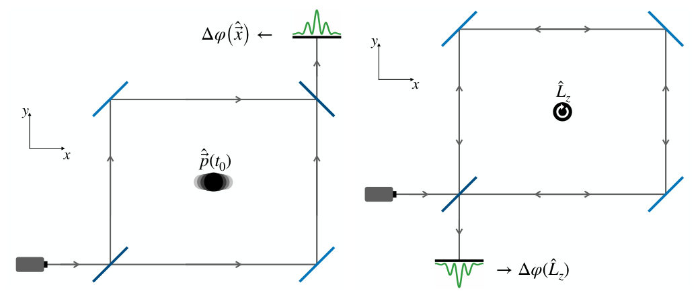
Summary. The paper extends the Diósi-Penrose model of gravitational collapse by incorporating the gravitomagnetic sector of linearized gravity. This extension predicts that rotation and mass currents induce new types of decoherence that are absent in standard mass-density-based models. The findings have significant implications for both laboratory-scale optomechanics and astrophysical observations of pulsars.
Why it may be interesting. This paper is highly relevant to researchers in open quantum systems and quantum optics as it proposes a fundamental, gravity-induced decoherence mechanism that affects rotational and angular momentum degrees of freedom, which is critical for high-precision mesoscopic experiments.
Main problem. The existing Diósi-Penrose (DP) model of gravitational collapse is limited to positional decoherence and fails to account for rotational degrees of freedom and mass currents.
Main result. The authors derive a post-Newtonian gravitational collapse model from linearized gravity that introduces new decoherence mechanisms for rotational and mixed mass-rotation degrees of freedom.
Method. The study uses a hybrid classical-quantum dynamics approach based on gravitoelectromagnetism, employing the Aleksandrov bracket and Gaussian white noise to derive a generalized master equation.
Model / system. A hybrid system where a quantum matter sector (mass density and currents) couples to a classical gravitational sector (gravitoelectric and gravitomagnetic potentials) within the weak-field limit of General Relativity.
Key observables. Decoherence rates for translational, rotational, and mixed channels; angular momentum expectation values; mass density distribution.
Important parameters / regimes. Post-Newtonian regime (non-negligible velocity); mass currents; gravitomagnetic field; mass density; surface velocity of rotating objects.
Assumptions / limitations. The model assumes the weak-field, slow-motion (linearized gravity) approximation and a hybrid classical-quantum framework with Gaussian white noise.
Figures summary. Figure 1(a) illustrates a gedankenexperiment where a quantum system in a momentum eigenstate sources a gravitational field to show how a noiseless potential would violate the uncertainty principle; Figure 1(b) is incomplete in notes.
Paper structure. The paper begins by introducing the problem of rotational decoherence, derives a new master equation using linearized gravity and gravitoelectromagnetism, compares the results to the standard DP model, and concludes with experimental implications for optomechanics and pulsars.
We introduce a general gravity-related collapse mechanism based on linearized gravity. Starting from the weak-field limit of general relativity, gravitoelectromagnetism suggests an effective coupling between the gravitoelectric potential and the mass density distribution. At the same time, it provides a similar relation for the gravitomagnetic vector potential and the mass current. Following a hybrid (classical-quantum) dynamics approach, these couplings lead to a master equation whose non-unitary part is determined by the underlying mass distribution and currents. When the gravitoelectric potential coupling is considered, the well-known Diósi-Penrose collapse model acting on positional degrees of freedom is recovered. However, upon including the gravitomagnetic vector potential, additional collapse mechanisms emerge for rotational degrees of freedom as well as for mixed mass-rotation contributions.
Authors: Riccardo Finotello, Vincent Lahoche, Parham Radpay, Dine Ousmane Samary
Type: theory · Category: statistical mechanics · PDF: https://arxiv.org/pdf/2605.11138v1
Analysis basis: full PDF text, analyzed in chunks
Topic relevance: driven-dissipative phase transition 2/5 · non-equilibrium dynamics 2/5 · non-equilibrium universality 2/5
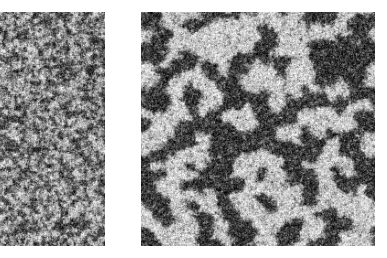
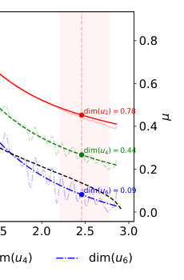
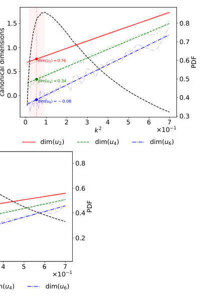
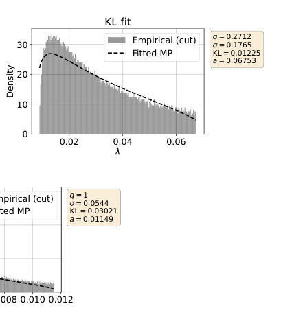
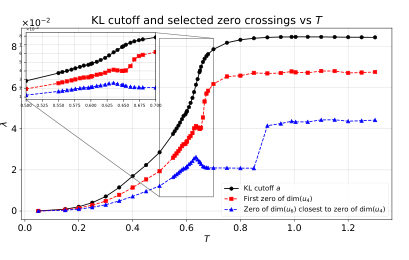
Summary. This paper proposes a new strategy for detecting signals in noisy data by treating the problem as a phase transition in a non-equilibrium field theory. By using the Functional Renormalization Group, the authors show that one can identify the emergence of signal from noise by monitoring the relevance of physical couplings. This approach provides a more precise method for resolving structures in complex datasets compared to traditional statistical methods.
Why it may be interesting. not directly relevant
Main problem. Developing a robust method for anomaly detection in high-noise datasets by bridging the gap between statistical inference and non-equilibrium phase transitions.
Main result. The authors establish that signal detection can be framed as identifying phase transitions in field theories, demonstrating that the Functional Renormalization Group (FRG) can identify critical thresholds with less than 4% error, outperforming KL divergence.
Method. The study uses the Functional Renormalization Group (FRG) with the Wetterich-Morris equation and Local Potential Approximation (LPA) to track the flow of interaction couplings.
Model / system. The framework is applied to a 2D Ising model (benchmark) and a continuous Model A (Langevin dynamics) governed by a time-dependent Ginzburg-Landau Hamiltonian with a quartic potential.
Key observables. Canonical dimensions of couplings (u2, u4, u6), Binder cumulant, eigenvalue spectrum, and noise-to-signal ratio (NSR).
Important parameters / regimes. Temperature (analogous to NSR), coupling constants (b), and the aspect ratio of the data matrix (q).
Assumptions / limitations. The approach is limited to analyzing flow around the Gaussian fixed point and uses the Hartree approximation, which is insufficient to reach the exact Onsager limit.
Figures summary. Figures illustrate the difficulty of separating heavy-tailed signals from noise, the behavior of coupling dimensions as NSR decreases, and a comparison of critical temperature estimates using Binder cumulants and GSA.
Paper structure. The paper introduces the correspondence between anomaly detection and RG flow, establishes the mathematical mapping to effective field theory, presents numerical simulations using the 2D Ising model and Model A, and concludes with a performance comparison against standard information-theoretic metrics.
We establish a correspondence between anomaly detection in high-noise regimes and the renormalization group flow of non-equilibrium field theories. We provide a physical grounding for this framework by proving that the detection of phase transitions in interacting non-equilibrium systems maps to the study of an effective equilibrium field theory near its Gaussian fixed point, which we identify with the universal Marchenko-Pastur distribution. Applying the Functional Renormalization Group to the two-dimensional Model A, we demonstrate that the noise-to-signal ratio acts as a physical temperature, where the signal emerges as ordered domains within a thermalized background of fluctuations. Using the exact Onsager solution as a benchmark, we show that this approach identifies critical thresholds with an error below 4%, significantly outperforming standard information-theoretic metrics such as the Kullback-Leibler divergence. Our results provide a universal strategy for resolving structures in complex datasets near criticality, bridging the gap between statistical mechanics and statistical inference.
Authors: Jonas Issing, Matteo Dürrnagel, Sarbajit Mazumdar, Alena Lorenz, Niklas Witt, Giorgio Sangiovanni, Michael Klett, Lennart Klebl, Ronny Thomale, Jannis Seufert
Type: theory · Category: strongly correlated electrons · PDF: https://arxiv.org/pdf/2605.11669v1
Analysis basis: full PDF text, analyzed in chunks
Topic relevance: Keldysh / 2PI / non-Gaussian methods 2/5 · spintronics-quantum-optics interface 2/5
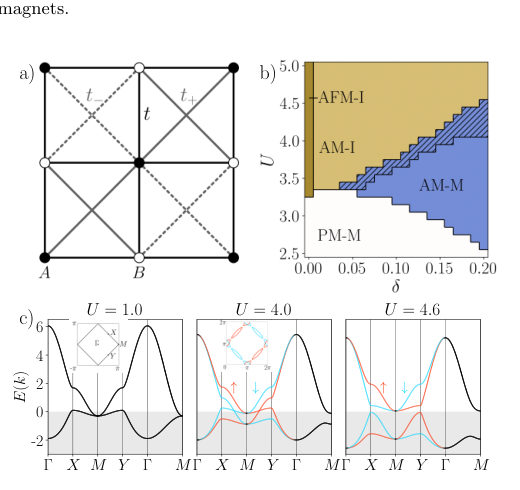
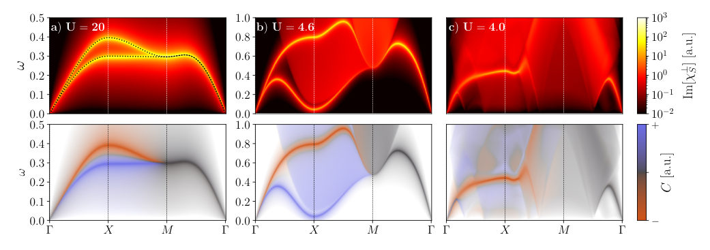
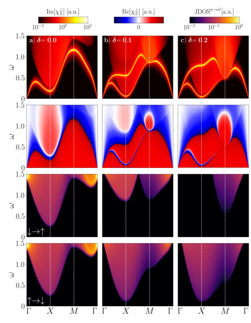
Summary. This paper provides a unified theoretical description of spin dynamics in altermagnets from the Mott insulating to the metallic regime. It reveals that the metal-insulator transition triggers a crossover between a regime of selective magnon damping and a regime of coherent, albeit deformed, chiral magnons.
Why it may be interesting. not directly relevant
Main problem. Investigating the stability and dynamical spin response of altermagnetic quasiparticles (chiral magnons) across the metal-insulator transition.
Main result. The study identifies a crossover from chirality-selective dissipation of magnon modes in the metallic regime to coherent but strongly deformed chiral magnon branches in the insulating regime.
Method. Spin-rotationally invariant Kotliar-Ruckenstein slave-boson theory (SBMFT) used to calculate dynamical spin susceptibilities and evaluate Gaussian fluctuations.
Model / system. A one-band Hubbard model on a checkerboard lattice with anisotropic next-nearest-neighbor hopping (t_plus and t_minus) to induce altermagnetism.
Key observables. Dynamical transverse spin susceptibility (Im[chi_S_perp]), magnon dispersion, magnon lifetime, and magnon chirality (C(q, omega)).
Important parameters / regimes. On-site Coulomb interaction (U), hopping anisotropy (delta), and the transition between paramagnetic metal, altermagnetic metal, and altermagnetic insulator phases.
Assumptions / limitations. The calculation is performed at the Gaussian level of fluctuations around a static two-sublattice saddle-point ansatz.
Figures summary. Figure 1 shows the checkerboard lattice schematic; Figure 2 displays the imaginary part of the transverse spin susceptibility and chirality-resolved spectra; Supplementary figures compare RPA, LSWT, and SBMFT results.
Paper structure. The paper introduces the Hubbard model on a checkerboard lattice, defines the slave-boson formalism and effective action, presents the phase diagram and metal-insulator transition, analyzes the dynamical spin response and magnon damping, and concludes with a comparison of theoretical methods.
By means of slave-boson theory for the Hubbard model on the checkerboard lattice, we calculate dynamical altermagnetic spin susceptibilities from the metallic to the Mott-insulating regime. We track magnon dispersion and lifetime renormalization, allowing us to uncover a crossover from a chirality-selective dissipation of magnon modes to coherent yet strongly deformed chiral magnon branches across the metal insulator transition. Our formalism lends itself to a quantitative description of collective spin dynamics in correlated altermagnets.
Authors: Partha Ghose
Type: theory · Category: disordered systems and neural networks · PDF: https://arxiv.org/pdf/2605.12126v1
Analysis basis: full PDF text, analyzed in chunks
Topic relevance: non-equilibrium dynamics 2/5 · quantum measurements 2/5
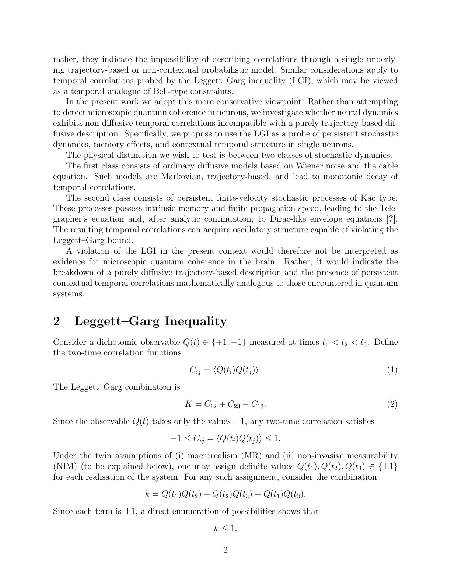
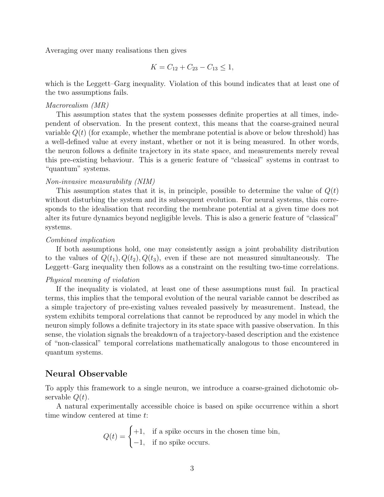
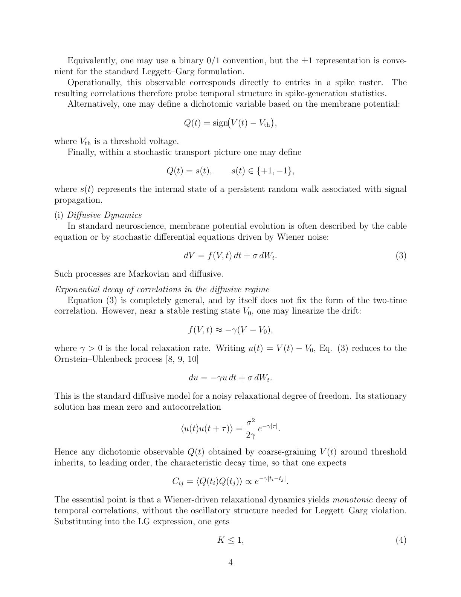
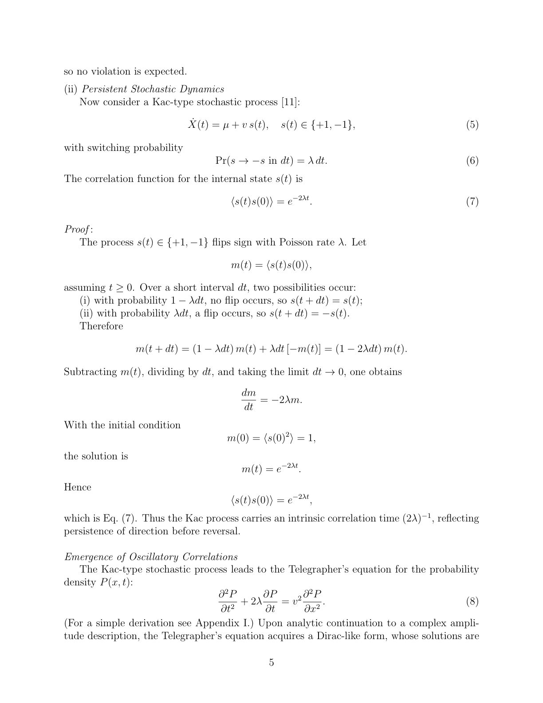
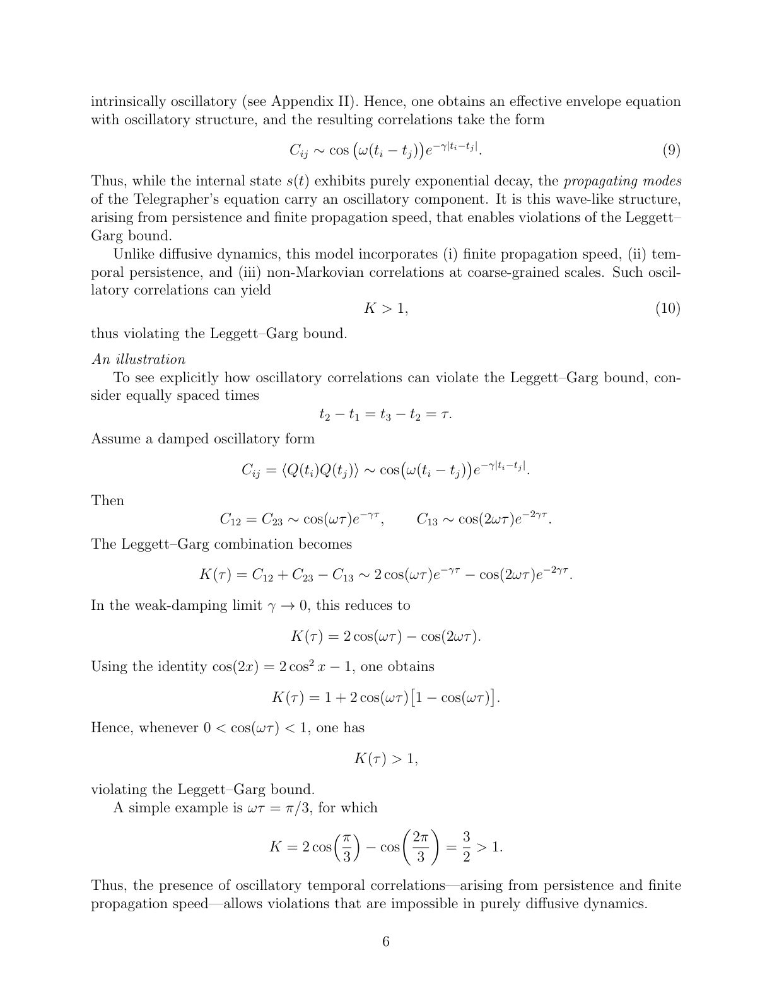
Summary. This paper proposes using Leggett-Garg inequality tests to identify non-diffusive, persistent stochastic dynamics in single neurons. It shows that while standard diffusive models satisfy the inequality, models with finite propagation speed can violate it. This provides a way to detect memory and non-Markovian structure in neural signals without invoking quantum biology.
Why it may be interesting. It applies the Leggett-Garg formalism—a staple of open quantum systems—to classical stochastic processes, showing how non-Markovianity and finite-velocity transport can mimic quantum-like temporal correlations.
Main problem. Determining whether neural dynamics exhibit non-diffusive temporal correlations that cannot be explained by standard Markovian, diffusive models.
Main result. The paper demonstrates that persistent stochastic models (Kac-type processes) can violate the Leggett-Garg inequality, providing a signature of memory and finite propagation speed that distinguishes them from diffusive models.
Method. The author uses the mathematical framework of the Leggett-Garg inequality (LGI) applied to two-time correlation functions derived from the Telegrapher's equation and analytic continuation to Dirac-like equations.
Model / system. The system is a single neuron modeled via membrane potential dynamics, specifically comparing diffusive (Wiener/cable equation) models against non-diffusive, persistent stochastic models (Kac-type processes/Telegrapher's equation).
Key observables. The Leggett-Garg parameter K (calculated from two-time correlations of a dichotomic variable Q(t)) and the dichotomic variable Q(t) derived from membrane potential or spike statistics.
Important parameters / regimes. Relaxation rate (gamma), switching probability (lambda), angular frequency of oscillations (omega), and measurement time interval (tau).
Assumptions / limitations. The neural activity is assumed to be approximately stationary; the violation is interpreted as a breakdown of diffusive descriptions rather than evidence of microscopic quantum coherence; measurement-induced disturbance is assumed to be negligible.
Paper structure. The paper introduces the problem of distinguishing neural dynamics, proposes the Leggett-Garg inequality as a probe, compares diffusive vs. persistent models, provides mathematical proof of LGI violation in the persistent regime, and discusses experimental implementation and interpretation.
We propose an experimental programme to test Leggett--Garg-type temporal correlations in single-neuron dynamics. The goal is to distinguish between diffusive (Wiener/cable-equation) models and non-diffusive persistent stochastic models based on Kac-type finite-velocity processes leading to the Telegrapher's equation. We show that while purely diffusive dynamics satisfies Leggett--Garg inequalities, persistent stochastic dynamics can produce oscillatory temporal correlations capable of violating these inequalities. The Leggett--Garg inequality may be viewed as a temporal analogue of Bell-type constraints. In the present context, however, violation is interpreted conservatively not as evidence of microscopic quantum coherence, but as evidence against a simple trajectory-based diffusive description. The resulting temporal correlations indicate persistence, memory, and contextual temporal structure mathematically analogous to that encountered in quantum systems. Using the analytic continuation connecting Kac processes to Dirac-like envelope equations, we argue that finite-velocity persistent stochastic transport provides a natural mechanism for such non-diffusive temporal correlations. These tests therefore offer a possible experimental probe of contextual and non-Markovian structure in neural dynamics without requiring claims of microscopic quantum coherence in the brain.
Authors: Yichen Xie, Cassandre Notton, Jean Senellart
Type: both · Category: quantum information and computing · PDF: https://arxiv.org/pdf/2605.11879v1
Analysis basis: full PDF text, analyzed in chunks
Topic relevance: entanglement & information structure 2/5 · quantum measurements 2/5
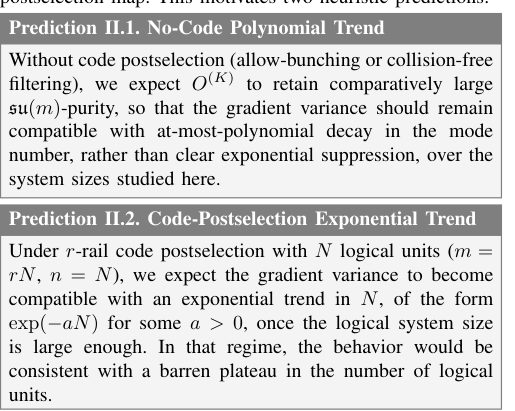
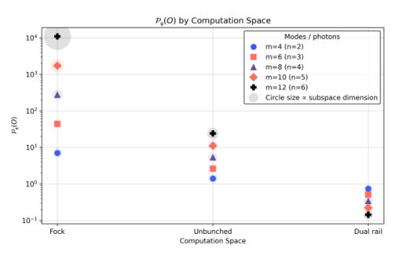
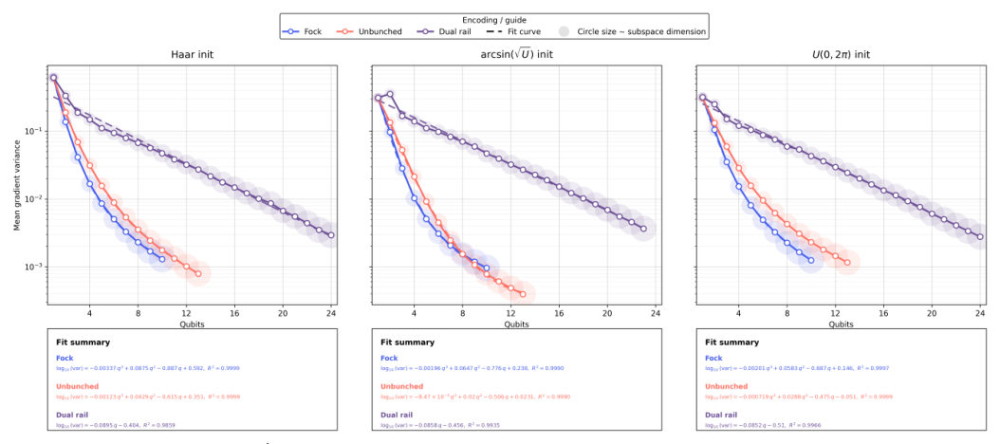
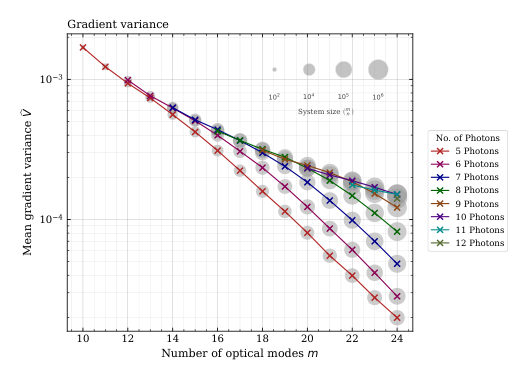
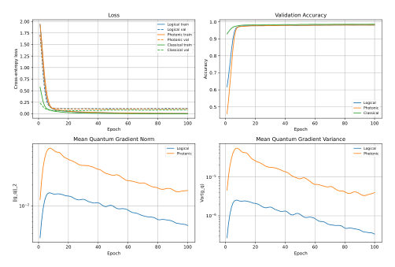
Summary. This paper investigates why some photonic variational circuits suffer from Barren Plateaus while others do not. It finds that while dual-rail encoding leads to exponential gradient decay, other regimes like collision-free filtering maintain polynomial decay. This offers a practical guide for designing trainable near-term photonic quantum machine learning models.
Why it may be interesting. It provides critical insights into the trainability of photonic quantum architectures, showing that unlike standard gate-based qubits, certain photonic postselection regimes can avoid the Barren Plateau problem by leveraging the specific Lie-algebraic structure of passive optics.
Main problem. Investigating the presence of Barren Plateaus (exponentially vanishing gradients) in photonic variational quantum circuits and determining how different postselection regimes affect trainability.
Main result. Gradient variance decays polynomially in allow-bunching and collision-free regimes, but exhibits exponential decay (Barren Plateaus) in dual-rail postselection, showing that trainability is driven by how postselection reshapes effective observables.
Method. The study uses exact statevector simulations and a Lie-algebraic framework to analyze gradient variance, comparing different postselection models and initialization ensembles.
Model / system. Passive linear-optical quantum computing using programmable Mach-Zehnder Interferometer (MZI) meshes acting on n-photon Fock states in m optical modes.
Key observables. Gradient variance, g-purity, Bhattacharyya loss, and pulled-back observables.
Important parameters / regimes. Number of modes (m), number of photons (n), number of logical units (N), and postselection regimes (allow-bunching, collision-free, and dual-rail).
Assumptions / limitations. Conclusions are based on finite-size numerical simulations; the theoretical framework uses a variance formula for linear observables while the experiment uses a nonlinear loss function.
Figures summary. Figure 1 shows g-purity scaling; Figure 2 compares gradient variance across different postselection regimes, highlighting the separation between polynomial and exponential decay; Figure 3 shows the robustness of polynomial scaling to mode count; Figure 4 demonstrates a supervised learning task (MNIST) where the photonic model maintains higher gradient norms than the logical model.
Paper structure. The paper introduces the Barren Plateau problem in photonics, defines the Lie-algebraic framework and postselection regimes, presents numerical scaling results for different regimes, demonstrates a practical machine learning application (MNIST), and discusses implications for circuit design.
Barren plateaus in variational quantum circuits are commonly attributed to strong mixing dynamics that cause gradient variance to vanish exponentially with system size. Passive photonic circuits, central to linear optical quantum computing, challenge this picture: although their Hilbert space can be exponentially large, their dynamics are constrained to a Lie algebra whose dimension scales as the square of the number of modes. In photonic systems, postselection also plays a central role, with gradient concentration governed not by the Hilbert-space dimension but by how it reshapes the effective observable. Through exact statevector simulations, we compare allow-bunching evolution, collision-free filtering, and dual-rail postselection. In the allow-bunching and collision-free regimes, gradient variance remains consistent with polynomial rather than exponential decay over the tested system sizes. By contrast, dual-rail postselection induces exponential concentration beyond moderate system sizes, robustly across three initialization ensembles. These results indicate that photonic barren plateaus are governed by the interplay between passive linear-optical dynamics, postselection geometry, and task observables, offering practical guidance for designing near-term photonic variational architectures.
Authors: Guillermo Currás-Lorenzo, Margarida Pereira, Alessandro Marcomini, Kiyoshi Tamaki, Marcos Curty
Type: theory · Category: quantum information and computing · PDF: https://arxiv.org/pdf/2605.11767v1
Analysis basis: full PDF text, analyzed in chunks
Topic relevance: correlated / nonlocal dissipation 2/5 · quantum measurements 2/5
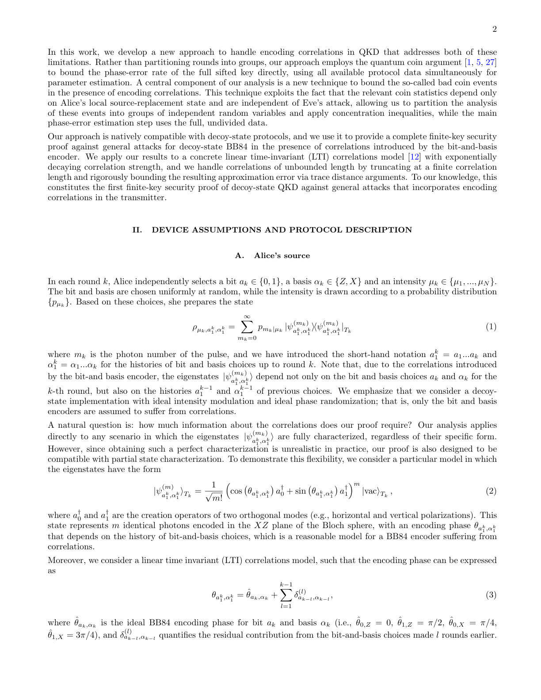
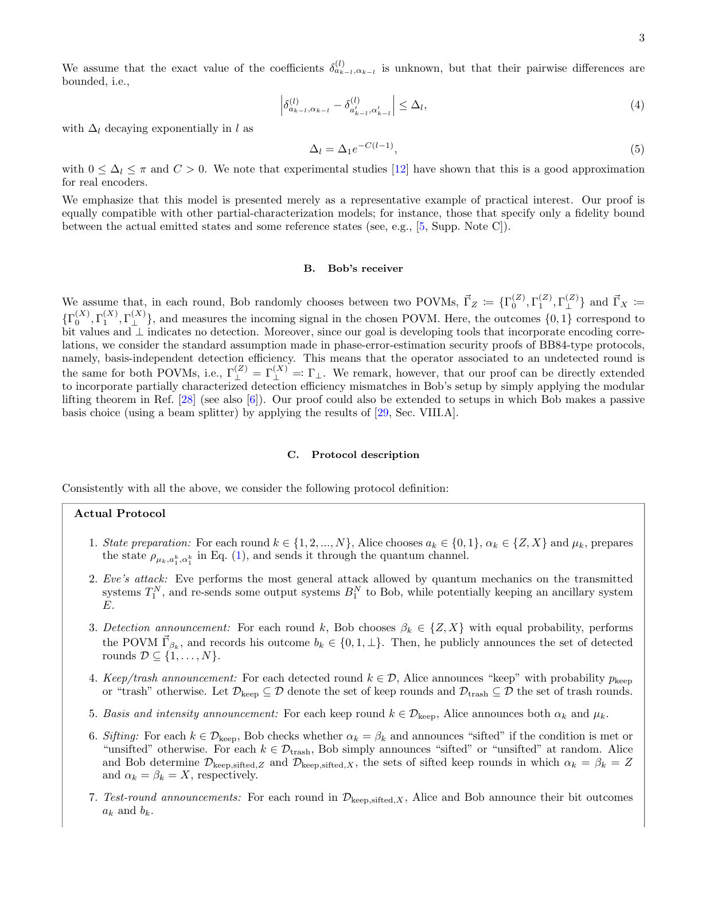
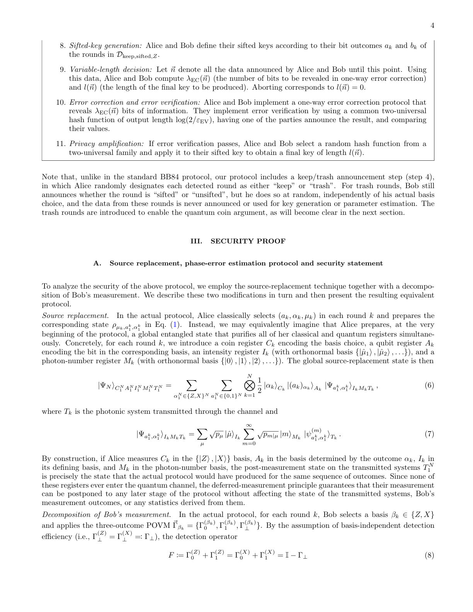
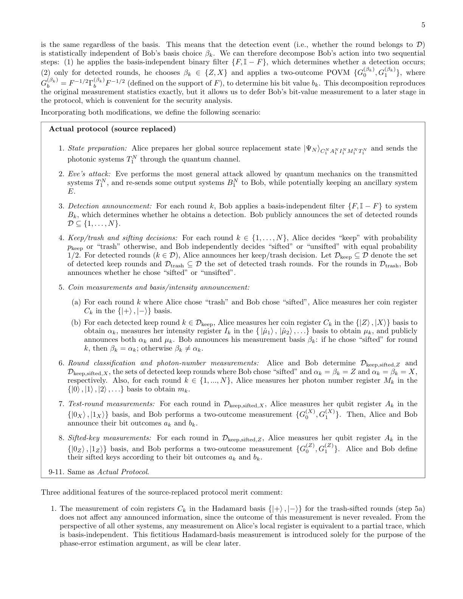
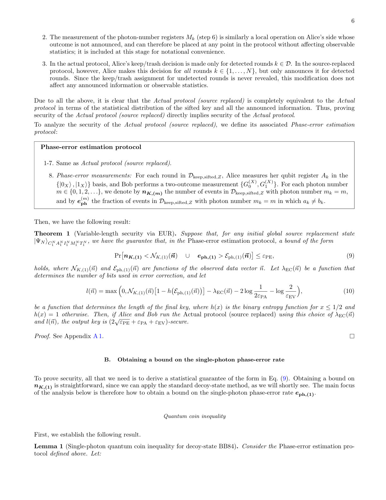
Summary. This paper provides a rigorous security proof for decoy-state QKD when the hardware introduces correlations between successive signal pulses. By using advanced statistical tools, the authors bridge the gap between ideal theory and practical, correlated hardware, ensuring higher key rates and tighter security bounds.
Why it may be interesting. This paper is highly relevant to quantum optics and open quantum systems as it addresses how memory effects and non-Markovian-like correlations in a quantum source impact the fundamental security of information protocols.
Main problem. Practical QKD modulators introduce correlations between successive rounds, breaking the round-by-round independence required by standard security proofs. This creates a security gap between theoretical guarantees and practical implementations.
Main result. The authors develop a finite-key security proof for decoy-state BB84 against general coherent attacks that rigorously incorporates encoding correlations. The proof achieves higher statistical efficiency by avoiding the need to partition rounds into independent groups.
Method. The work employs a source-replacement model, the principle of deferred measurement, and a quantum coin argument. It uses concentration inequalities (Azuma's and Bernstein's) and trace distance arguments to bound errors and handle unbounded correlation decay.
Model / system. A prepare-and-measure decoy-state BB84 QKD protocol using phase-randomized coherent states. The source is modeled as a Linear Time-Invariant (LTI) system where encoding phases depend on previous rounds with exponentially decaying correlations.
Key observables. Single-photon yields, phase-error rate, error counts in Z and X bases, and detection counts in 'keep' and 'trash' modes.
Important parameters / regimes. Correlation length (lc), correlation strength (delta), photon-number-dependent intensities (mu), and security parameters (epsilon_PE, epsilon_PA, epsilon_EV).
Assumptions / limitations. The model assumes ideal intensity modulation and phase randomization, and that correlations are limited to the bit and basis encoders. It also assumes an exponentially decaying correlation model (LTI).
Paper structure. The paper begins by defining the security gap and the LTI encoding model, then introduces a source-replacement framework. It proceeds through a series of lemmas and theorems to bound the phase-error rate and the 'bad coin' events, finally providing a complete security guarantee and a truncation strategy for unbounded correlations.
Practical quantum key distribution (QKD) modulators inevitably introduce correlations, causing the state emitted in a given round to depend on the setting choices made in previous rounds. These correlations break the round-by-round independence structure on which many widely used security proof techniques rely, leaving a significant gap between available theoretical guarantees and the reality of practical implementations. In this work, we develop a finite-key security proof for decoy-state BB84 against general coherent attacks that rigorously incorporates correlations introduced by Alice's bit-and-basis encoder, while requiring only partial characterization of such correlations.
Authors: G. Gavello, G. Petrini, I. Ruo Berchera, M. Gramegna, E. Moreva, P. Traina, M. Ziino, M. Genovese, P. Olivero, J. Forneris, I. P. Degiovanni
Type: theory · Category: quantum information and computing · PDF: https://arxiv.org/pdf/2605.12397v1
Analysis basis: full PDF text, analyzed in chunks
Topic relevance: methods for driven-dissipative 2/5 · quantum measurements 2/5
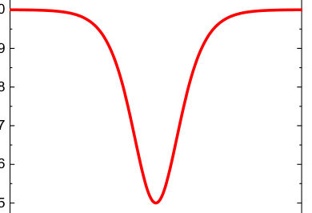
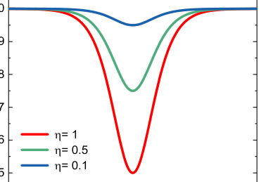
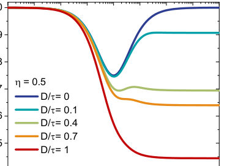
Summary. This paper proves that single-photon sources under continuous excitation can produce sub-Poissonian light when excitation and decay rates are balanced. It also provides a quantitative guide for experimentalists to distinguish true nonclassical emission from artifacts caused by detector dead time and low collection efficiency.
Why it may be interesting. This is highly relevant to quantum optics and open quantum systems as it provides a rigorous way to distinguish intrinsic quantum correlations from experimental artifacts in photon-counting statistics.
Main problem. The paper challenges the assumption that continuous-wave (CW) excited single-photon sources (SPSs) inherently exhibit Poissonian statistics and investigates how detection non-idealities affect the observation of sub-Poissonian light.
Main result. The authors demonstrate that sub-Poissonian statistics can occur when excitation and decay rates are comparable, reaching a minimum Fano factor of 0.5, and show that while losses reduce the visibility of this signature, detector dead time can create artificial sub-Poissonian artifacts.
Method. A theoretical framework using Probability Generating Functions (PGF) and Laplace transforms to derive the moments of photon statistics from stochastic absorption and emission processes.
Model / system. A theoretical model of a two-level single-photon source subject to continuous optical excitation, where both photon absorption and radiative decay are treated as independent stochastic Poissonian processes.
Key observables. Fano factor (ratio of variance to mean), mean photon number, and photon number variance.
Important parameters / regimes. Excitation rate (mu1), decay rate (mu2), detection efficiency (eta), and detector dead time (D).
Assumptions / limitations. Each absorption-emission cycle is assumed to be independent, and the analysis focuses on the long-time limit (T to infinity).
Figures summary. Figure 1 shows the Fano factor dip below 1.0 at the rate ratio of 1; Figure 2 shows how decreasing detection efficiency reduces the depth of the Fano factor minimum; Figure 3 shows how detector dead time introduces asymmetry and can mask the intrinsic sub-Poissonian minimum.
Paper structure. The paper introduces the problem of CW-excited statistics, develops a stochastic model using PGFs and Laplace transforms, extends the model to include realistic detection losses and dead time, and concludes with an analysis of experimental implications.
Shot noise sets a fundamental limit on the sensitivity of classical optical measurements, with coherent emitters achieving the lowest possible shot-noise level. Emission from sub-Poissonian light provides a pathway to surpass this limit, and single-photon sources provide a natural platform for generating such light. However, it is commonly assumed that continuously excited single-photon sources exhibit Poissonian statistics. In this work, a theoretical model of a continuously driven two-level single-photon source is developed, treating both excitation and radiative decay as stochastic processes. The analysis demonstrates that photon emission can display sub-Poissonian statistics when excitation and decay rates are comparable, showing that continuous excitation does not inherently preclude nonclassical emission. The model is further extended to include finite detection efficiency and detector dead time, illustrating how these practical non-idealities can affect the experimental observation of sub-Poissonian statistics.
Authors: Ge Yan, Shanchuan Li, Yuxuan Du
Type: both · Category: quantum information and computing · PDF: https://arxiv.org/pdf/2605.12046v1
Analysis basis: full PDF text, analyzed in chunks
Topic relevance: QC/QI experiment 2/5 · quantum measurements 1/5
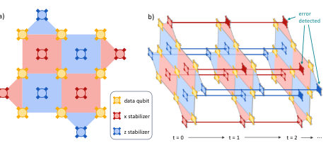
Summary. This paper re-evaluates neural decoders for surface codes by focusing on the practical constraints of real-time hardware deployment. It demonstrates that while data scale is a primary driver of performance, the architecture must possess the correct geometric inductive bias to scale, and low-precision quantization is necessary to achieve microsecond-scale decoding on FPGAs.
Why it may be interesting. not directly relevant
Main problem. The fundamental challenge of balancing decoding accuracy with the microsecond-scale latency required for real-time, fault-tolerant quantum error correction (QEC) on FPGA hardware.
Main result. The study reveals that near-term decoding performance is driven more by training data scale than architectural complexity, provided the architecture has the correct inductive bias, and that INT4 quantization via Quantization-Aware Training is essential for meeting hardware latency constraints.
Method. The authors evaluate five neural decoder architectures (MLP, 3D-CNN, TCN, Transformer, GNN) using a model compression pipeline involving pruning and quantization (PTQ and QAT) and assess deployability on Xilinx Versal Premium FPGAs.
Model / system. The study focuses on rotated surface codes with distances up to d=9, utilizing a Z-memory experiment model with circuit-level depolarizing noise and validation on Google Sycamore processor data.
Key observables. Logical Error Rate (LER), decoding latency, FPGA resource utilization (LUTs, DSPs, BHD), and training loss (BCE).
Important parameters / regimes. Code distance (d=3 to 9), training dataset size (up to 1 billion samples), quantization precision (INT4, W8A8), and sparsity levels (up to 90%).
Assumptions / limitations. The FPGA resource estimation assumes a 50% derating factor to account for routing congestion and infrastructure logic.
Figures summary. Figure 1 shows the surface code lattice structure; Figure 3 compares LER across different architectures and training scales; Figure 4 illustrates the sensitivity of architectures to quantization (PTQ vs QAT); Figure 8 compares performance across different noise models.
Paper structure. The paper begins by defining the accuracy-latency tradeoff in QEC, introduces a taxonomy of neural decoder architectures, details a model compression and hardware deployment pipeline, presents systematic scaling experiments regarding data and architecture, and concludes with hardware-specific validation on FPGAs.
Quantum error correction (QEC) is essential for enabling quantum advantages, with decoding as a central algorithmic primitive. Owing to its importance and intrinsic difficulty, substantial effort has been made to QEC decoder design, among which neural decoders have recently emerged as a promising data-driven paradigm. Despite this progress, practical deployment remains hindered by a fundamental accuracy-latency tradeoff, often on the microsecond timescale. To address this challenge, here we revisit neural decoders for surface-code decoding under explicit accuracy-latency constraints, considering code distances up to d=9 (161 physical qubits). We unify and redesign representative neural decoders into five architectural paradigms and develop an end-to-end compression pipeline to evaluate their deployability and performance on FPGA hardware. Through systematic experiments, we reveal several previously underexplored insights: (i) near-term decoding performance is driven more by data scale than architectural complexity; (ii) appropriate inductive bias is essential for achieving high decoding accuracy; and (iii) INT4 quantization is a prerequisite for meeting microsecond-scale latency requirements on FPGAs. Together, these findings provide concrete guidance toward scalable and real-time neural QEC decoding.
Authors: Ssu-Yi Chen, Bo-Hung Chen, Dah-Wei Chiou, Jie-Hong Roland Jiang
Type: theory · Category: quantum information and computing · PDF: https://arxiv.org/pdf/2605.11823v1
Analysis basis: full PDF text, analyzed in chunks
Topic relevance: entanglement & information structure 2/5
Summary. The authors present a framework for simulating the SSHH model on gate-based quantum computers using adiabatic evolution. They show that topological features like the Berry phase are preserved under weak electron-electron interactions but vanish when symmetry-breaking interactions become too strong. This work serves as a proof-of-concept for using quantum computers to study the stability of topological phases in interacting systems.
Why it may be interesting. It provides a practical, polynomially scaling blueprint for using near-term quantum hardware to study complex topological properties in interacting many-body systems that are difficult to capture with standard variational methods.
Main problem. Developing a scalable gate-based quantum computing framework to probe the topological signatures and robustness of the many-body Su-Schrieffer-Heeger-Hubbard (SSHH) model.
Main result. Demonstrated that topological characteristics like the many-body Berry phase and edge-state polarization are robust against weak Hubbard interactions but break down when chiral-symmetry-breaking interactions exceed a specific threshold.
Method. Adiabatic quantum simulation using a first-order Trotter decomposition on a gate-based quantum computer, including explicit circuit constructions for state preparation and time evolution.
Model / system. The one-dimensional fermionic Su-Schrieffer-Heeger-Hubbard (SSHH) model, which includes topological hopping (intra-cell v and inter-cell w) and on-site Hubbard interactions (U_A and U_B).
Key observables. Many-body Berry phase, spatial profile of sublattice polarization, charge center, and edge-occupation operator.
Important parameters / regimes. Hopping amplitudes (v, w), Hubbard interaction strengths (U, delta U), evolution time (T), and number of Trotter intervals (L).
Assumptions / limitations. The adiabatic approximation assumes a non-degenerate path and a sufficiently large evolution time; the framework relies on the interaction being weak enough to avoid closing the energy gap.
Figures summary. Fig 1 shows the quantum circuit for a Trotter step; Fig 2 shows Trotter convergence fidelity; Fig 3 shows the many-body Berry phase as a function of intercell hopping; Fig 4 shows the spatial profile of sublattice polarization.
Paper structure. The paper introduces the problem of probing many-body topology, describes the SSHH model and the adiabatic simulation framework, details the quantum circuit construction and measurement protocols, presents numerical results demonstrating topological robustness and breakdown, and concludes with the scalability of the approach.
We develop an adiabatic quantum simulation framework on gate-based quantum computers to probe topological signatures of the one-dimensional fermionic Su--Schrieffer--Heeger--Hubbard (SSHH) model. We present explicit quantum-circuit constructions for initial-state preparation and time evolution, together with a practical measurement protocol and classical post-processing procedure for extracting the many-body Berry phase and the spatial profile of the sublattice polarization. Using classical simulations of the proposed circuits, we demonstrate -- for the first time within a genuine many-body framework -- that the topological characteristics of the SSH model remain robust against weak Hubbard interactions but eventually break down as the chiral-symmetry-breaking component of the interaction exceeds a threshold. The required qubit number, gate complexity, measurement shots, and classical pre- and post-processing costs all scale polynomially with system size. Our results provide a proof-of-concept framework for probing topological properties of interacting many-body systems via adiabatic quantum simulation on future large-scale quantum computers.
Authors: Donghao Yan, Shaoxiong Li, Hiroki Saito
Type: theory · Category: quantum gases · PDF: https://arxiv.org/pdf/2605.11670v1
Analysis basis: full PDF text, analyzed in chunks
Topic relevance: non-equilibrium dynamics 2/5
Summary. This paper studies how rotating vortices in dipolar Bose-Einstein condensates induce spontaneous magnetization through a mechanism similar to the Barnett effect. It shows that these droplets can undergo mechanical Larmor precession and form stable bound pairs. The study provides a complete picture of the stability and interaction of these unique, self-bound quantum objects.
Why it may be interesting. It explores a novel macroscopic manifestation of the Barnett effect in a self-bound quantum system, linking topological excitations (vortices) to spontaneous magnetization and mechanical rotation, which is highly relevant to many-body dynamics and the control of quantum fluids.
Main problem. Investigating the stability, spontaneous magnetization, and interaction dynamics of rotating vortex states in self-bound spinor dipolar quantum droplets.
Main result. The authors demonstrate that rotating droplets exhibit a Barnett-like effect where orbital angular momentum transfers to spin angular momentum, creating spontaneous axial magnetization and enabling mechanical Larmor precession. They also find that chirally different droplets can form stable bound states due to magnetic attraction.
Method. Numerical simulations using the extended Gross-Pita_Equation (eGPE) with Lee-Huang-Yang corrections and a variational analysis using a torus-shaped Gaussian trial wave function.
Model / system. Spinor dipolar Bose-Einstein condensates (F=1) in free space, modeled by the eGPE including s-wave contact interaction, magnetic dipole-dipole interaction (DDI), and LHY corrections.
Key observables. Total density, spin density, orbital angular momentum, spin angular momentum, total angular momentum, magnetization, and Larmor precession frequency.
Important parameters / regimes. Dipolar strength (epsilon_dd), atom number (N), vorticity (l), and gyromagnetic ratio (gamma).
Assumptions / limitations. The variational model assumes small polarization in the z-direction and focuses on the stability of the droplet structure rather than full spin-mixing dynamics.
Figures summary. Fig 1 shows density and spin structures for non-rotating and rotating states; Fig 2 illustrates the dynamics of mechanical Larmor precession under a magnetic field ramp; Fig 4 presents stability boundaries for different vorticities; Fig 5 and 6 demonstrate robustness against noise and the dynamics of droplet pairs.
Paper structure. The paper introduces the system and the Barnett-like mechanism, presents numerical results for ground and rotating states, analyzes the dynamics of Larmor precession, provides a variational analysis for stability boundaries, and concludes with the study of droplet-pair interactions and robustness.
We propose releasing the spin degree of freedom to stabilize the vortex state in self-bound droplets of dipolar Bose-Einstein condensates. When a vortex is embedded into the droplet, spontaneous magnetization arises in the axial direction via a mechanism similar to the Barnett effect; that is, the orbital angular momentum is transferred to the spin angular momentum. When an external magnetic field is applied to the spontaneously magnetized droplet, the entire atomic cloud starts to rotate without changing its shape, which can be regarded as mechanical Larmor precession of a macroscopic object. A chirally different pair of droplets can form a stable bound state because of the attractive interaction between the spontaneously magnetized droplets.
Authors: Narasinga Rao Miniskar, Elaine Wong, Vicente Leyton-Ortega, Jeffrey S. Vetter, Travis S. Humble
Type: both · Category: quantum information and computing · PDF: https://arxiv.org/pdf/2605.11382v1
Analysis basis: full PDF text, analyzed in chunks
Topic relevance: QC/QI experiment 2/5
Summary. This paper introduces a new runtime system designed to manage hybrid quantum-classical workloads on heterogeneous high-performance computing nodes. By treating quantum kernels as tasks in an asynchronous scheduler, it allows for the concurrent execution of quantum simulations and real hardware tasks. The work demonstrates that using circuit cutting within this framework can significantly optimize the computational load for large-scale quantum simulations.
Why it may be interesting. not directly relevant
Main problem. The lack of unified, scalable software architectures for orchestrating concurrent classical and quantum workloads across heterogeneous high-performance computing platforms.
Main result. The development of a task-based runtime (Q-IRIS) that enables concurrent execution of quantum and classical tasks, demonstrating that circuit cutting can reduce simulation burdens on classical hardware while maintaining accuracy.
Method. Integration of the IRIS asynchronous scheduler with a QIR Execution Engine (QIR-EE) using an isolated process and memory-mapped communication to manage QIR kernels and circuit cutting via the QCut library.
Model / system. A heterogeneous computing platform integrating CPUs, GPUs, and QPUs, including quantum simulators (Google QSIM) and physical trapped-ion hardware (IONQ FORTE-1).
Key observables. Expectation value of the ZZ...Z operator (e.g.,
Important parameters / regimes. Number of qubits (4 and 20), number of circuit cuts, and execution time stages (Create, Exec+Post, Retrieve).
Assumptions / limitations. The QIR-EE engine lacks thread safety, necessitating execution within an isolated process.
Figures summary. Figure 1 shows the IRIS design hierarchy and hardware integration; Figure 2 illustrates the Q-IRIS architecture and task orchestration; Figure 3 demonstrates the wire-cutting procedure for partitioning circuits.
Paper structure. The paper introduces the problem of siloed quantum software, presents the Q-IRIS architecture and QIR-EE driver implementation, details the circuit cutting methodology, and evaluates performance using both simulators and physical IONQ hardware.
High-performance computing systems are rapidly evolving into heterogeneous platforms that fuse quantum accelerators with traditional classical processing units (CPUs) and graphical processing units (GPUs). This convergence calls for runtimes capable of managing both classical and quantum workloads in a unified manner. We introduce an intelligent, task-based runtime that marries the Intelligent RuntIme System (IRIS) asynchronous scheduler with a quantum programming stack through the Quantum Intermediate Representation Execution Engine (QIR-EE). Our design allows programs written in the quantum intermediate representation (QIR) to be dispatched concurrently to a variety of back-ends, including multiple quantum simulators and nascent quantum processors, enabling genuine hybrid execution on a single node. To illustrate its practicality, we partition a 4-qubit and 20-qubit circuit into three sub-circuits using quantum circuit cutting via the QCut library. Each sub-circuit is simulated independently by the QIR-EE driver within IRIS, after which a classical post-processing step merges the simulation results to recover the outcome of the original full-circuit computation. This case study demonstrates how finer task granularity can enable the parallel execution and lower the simulation burden per quantum task while preserving overall accuracy, highlighting the feasibility of our hybrid approach.
Authors: Chen-Ming Bai, Xin-Liang Zhou, Yu Luo
Type: theory · Category: quantum information and computing · PDF: https://arxiv.org/pdf/2605.11642v1
Analysis basis: full PDF text, analyzed in chunks
Topic relevance: entanglement & information structure 2/5
Summary. This paper extends the classification of information leakage in quantum encrypted cloning from qubits to arbitrary-dimensional qudits. It identifies a specific mathematical condition involving the greatest common divisor that determines whether unauthorized subsets of a quantum storage register are secure or leak information. This provides a fundamental boundary for confidentiality in higher-dimensional quantum communication protocols.
Why it may be interesting. not directly relevant
Main problem. The paper investigates information leakage in a qudit-based quantum encrypted cloning protocol, specifically determining which unauthorized subsets of the storage register retain information about the input state.
Main result. The authors derive a dimension-dependent confidentiality boundary, showing that an unauthorized subset is completely uninformative if and only if the greatest common divisor of the dimension d and the expression p(q + 1) - 1 equals 1.
Method. The study uses analytical computation of reduced density matrices via partial traces, combined with an algebraic approach involving the properties of generalized Pauli operators and systems of congruences.
Model / system. A quantum encrypted cloning protocol using qudits (d-dimensional systems) where an unknown input state is encoded into n pairs of signal and noise qudits using a unitary transformation involving generalized Pauli operators.
Key observables. The reduced density matrix of the storage register subsets and the presence of residual dependence on the input state via generalized Pauli operators.
Important parameters / regimes. The dimension of the qudits (d), the number of signal-noise pairs (n), and the composition of the subset (number of signal qudits p and noise qudits q).
Assumptions / limitations. The analysis is restricted to 'aligned' unauthorized subsets, which are defined as those containing exactly one qudit from each signal-noise pair.
Paper structure. The paper introduces the encrypted cloning problem, defines the qudit-based model, provides a general classification framework for subsets, presents the mathematical derivation of the leakage condition using congruence systems, works out low-dimensional examples (n=1, 2, 3), and concludes with the generalized GCD-based rule.
Encrypted cloning offers a means of introducing redundancy into quantum storage while respecting the no-cloning theorem: an unknown state is encoded into multiple signal-noise pairs, and only authorized subsets can recover the original information. However, the leakage properties of unauthorized subsets particularly for higher-dimensional systems (qudits) have remained unexplored. In this work, we systematically classify the informative subsets of the storage register in the qudit encrypted-cloning protocol. We focus on unauthorized subsets of size $n$ that contain exactly one qudit from each signal-noise pair. We show that the presence or absence of information leakage is determined by the solution set of a system of congruences whose coefficients depend on the dimension $d$ and on the numbers of signal and noise qudits in the subset. The reduced state is completely uninformative if and only if the congruence system admits only the trivial solution; otherwise, it retains a residual dependence on the input state through specific generalized Pauli operators. Low-dimensional examples ($n=1,2,3$) are worked out explicitly, and the complete classification is expressed in terms of a greatest-common-divisor condition. Our results extend the parity-based classification known for qubits ($d=2$) to arbitrary finite dimensions, revealing a dimension-dependent boundary of confidentiality in encrypted cloning.
Authors: Kemal Atalar, Hugh G. A. Burton, Andreas Grüneis, George H. Booth
Type: theory · Category: numerical methods · PDF: https://arxiv.org/pdf/2605.11253v1
Analysis basis: full PDF text, analyzed in chunks
Topic relevance: entanglement & information structure 2/5
Summary. The paper presents a new method to compress two-electron reduced density matrices by coupling Coulomb and exchange channels into a low-rank representation. This reduces memory requirements from quartic to quadratic scaling, enabling much larger-scale correlated electronic structure simulations and nonadiabatic dynamics without losing chemical accuracy.
Why it may be interesting. This provides a highly efficient way to compress many-body information (2RDMs) while maintaining physical symmetries, which is crucial for scaling up classical simulations of many-body dynamics and wavefunction interpolation.
Main problem. The quartic storage cost of two-electron reduced density matrices (2RDMs) and transition 2RDMs creates a major bottleneck in electronic structure workflows as system size increases.
Main result. A low-rank joint decomposition protocol reduces memory scaling from quartic to quadratic while preserving physical symmetries and the wedge-product structure, achieving up to 99% compression with chemical accuracy.
Method. A wedge-preserving low-rank decomposition that couples Coulomb and exchange channels through common factors, augmented with diagonal corrections and amplitude relaxation.
Model / system. Interacting many-electron systems, specifically tested on alkane chains (octane) and hydrogen chains (H2, H10, H28, H30) using CCSD, DMRG, and FCI methods.
Key observables. Electronic energy, nuclear gradients, transition matrix elements, population transfer, and spectroscopic/dynamical observables.
Important parameters / regimes. Compression error thresholds (10^-1 to 10^-3 Ha), system size (number of orbitals/electrons), and rank (number of retained vectors).
Assumptions / limitations. Assumes real-valued states and a spin-free formulation; assumes the effectiveness of the SAO basis for localizing corrections.
Figures summary. Figure 1 compares rank requirements for different groupings in H-chains; Figure 2 shows low-rank decomposition for H10; Figure 3 shows energy error and rank scaling for alkanes; Figure 6 demonstrates convergence of nonadiabatic dynamics with varying compression thresholds; Figure 7 shows error reduction via relaxation and diagonal corrections.
Paper structure. The paper introduces the 2RDM compression problem, defines the proposed joint decomposition and diagonal correction methods, demonstrates scaling and accuracy on alkanes, extends the method to transition 2RDMs for eigenvector continuation, and validates the scheme via nonadiabatic molecular dynamics simulations.
Two-body reduced density matrices (2RDMs) encode the essential two-electron physics of electronic states, but their quartic storage cost poses a major limitation in practical workflows. We investigate a simple protocol to compress both transition and non-transition 2RDMs into a lower-rank representation that preserves their wedge-product structure and physical symmetries under truncation. The resulting decomposition couples Coulomb and exchange channels through a common set of low-rank factors, yielding a more compact rank-sparse representation than single-channel factorizations. For correlated states, the effective rank scales linearly with system size, achieving a $\sim99$\% compression for the coupled-cluster 2RDM of octane while retaining chemical accuracy. We apply this to the recently introduced {\em ab initio} eigenvector continuation workflows, where many-body wave functions are interpolated across nuclear geometries with mean-field cost. Here, 2RDMs between training states act as projectors into a subspace but their memory scaling limits applications to larger systems. The compression scheme reduces the memory cost from quartic to quadratic for a fixed error per electron. Metrics to systematically control the decomposition are investigated, enabling statistically resolved structural, dynamical and spectroscopic observables from nonadiabatic molecular dynamics simulations of photoexcited H$_{28}$ chains, interpolating from compressed near-exact DMRG training data. This establishes these structure-preserving compressed intermediates for practical correlated electronic structure workflows.
Authors: V. W. Scarola
Type: theory · Category: quantum information and computing · PDF: https://arxiv.org/pdf/2605.12502v1
Analysis basis: full PDF text, analyzed in chunks
Topic relevance: quantum measurements 2/5

Summary. The authors introduce QPatLib, a new library of measurement patterns designed for benchmarking measurement-based quantum simulations of molecular systems. The library allows researchers to study the trade-offs between different hardware constraints and optimization strategies. It serves as a standardized resource for developing more efficient quantum simulation protocols.
Why it may be interesting. It provides a standardized framework for evaluating how quantum algorithms can be mapped to physical hardware, which is crucial for the development of scalable many-body dynamics simulations on near-term devices.
Main problem. The lack of a standardized, scalable dataset and testbed for benchmarking the optimization of measurement-based quantum simulation (MBQS) patterns under hardware constraints.
Main result. The release of QPatLib (v1.0), a library of validated measurement patterns for simulating molecular Hamiltonians, providing a benchmark for pattern optimization and hardware-specific compactification.
Method. A bottom-up workflow that groups Pauli strings into commuting subsets, transpiles them into quantum circuits, and then converts those circuits into measurement patterns on graph states, stored in a standardized JSONL format.
Model / system. Measurement-based quantum computing (MBQC) using graph states to simulate the electronic structure Hamiltonians of diatomic molecules (e.g., Be2, H2, N2) via Jordan-Wigner mapping.
Key observables. Graph state properties (nodes, edges, max degree) and measurement pattern metrics (number of Pauli measurements, pattern width, depth, and maximum layer distance).
Important parameters / regimes. Subset grouping strategies (One-to-One, Smallest-to-Last, Full), Suzuki-Trotter error scaling, and hardware constraints like connectivity and causal flow.
Assumptions / limitations. The library v1.0 focuses on Pauli-string unitaries and does not yet include patterns produced by automated compactification algorithms; it assumes a first-order Suzuki-Trotter expansion.
Figures summary. Figure 1 shows the QPatLib workflow; Figure 2 illustrates a specific measurement pattern and causal flow; Figure 3 displays a pattern for a Pauli string in Be2; Figure 4 compares circuit and measurement depth; Figure 7 shows a pattern optimized for fewer measurements.
Paper structure. The paper introduces the library construction and workflow, demonstrates design principles through subset strategies, presents the validated dataset for various molecules, and discusses future applications for pattern compactification.
Measurement-based quantum computing uses measurement patterns on predefined quantum resource states to execute quantum logic. Quantum simulation offers an important use case on near-term devices. However, pattern optimization depends on the multivariable interplay between hardware and software constraints and is therefore use-dependent and highly non-trivial. Optimization of large-scale patterns under realistic assumptions remains a barrier. We announce the release of the quantum measurement pattern library QPatLib, a dataset that, in v1.0, presents patterns for use in measurement-based quantum simulation. We present the workflow for generating patterns that execute Pauli-string unitaries needed for many quantum algorithms. We provide benchmark patterns for measurement-based quantum unitary evolution. The measurement patterns are defined with different conventions for commuting Pauli-string subsets to allow scaling of pattern size and complexity. The purpose of the library is to (i) serve as a standardized testbed for pattern-optimization protocols for measurement-based quantum simulation routines, (ii) offer a suite of patterns for direct use on hardware, (iii) provide data to empirically justify pattern design principles, and (iv) provide a flexible resource for future storage and use of measurement-based patterns beyond quantum simulation.
Authors: Lei Hu, Mohamed Nomeir, Alptug Aytekin, Sennur Ulukus
Type: theory · Category: quantum information and computing · PDF: https://arxiv.org/pdf/2605.12455v1
Analysis basis: full PDF text, analyzed in chunks
Topic relevance: entanglement & information structure 2/5
Summary. This paper shows that in quantum-assisted distributed storage, we can achieve the most efficient possible balance between storage space and repair data even when we require the repaired node to be an exact replica of the original. It achieves this by using quantum stabilizer codes to optimize the reconstruction process.
Why it may be interesting. not directly relevant
Main problem. The paper investigates whether the optimal tradeoff between storage and repair bandwidth achieved under functional repair can be maintained under the stricter constraint of exact repair in entanglement-assisted distributed storage systems.
Main result. The authors prove that for the regime d >= 2k - 2, the optimal regenerating point where storage and repair bandwidth are both minimized to B/k is achievable under exact repair.
Method. The construction utilizes a classical product-matrix framework combined with the Calderbank-Shor-Steane (CSS)-based stabilizer formalism and Vandermonde matrices.
Model / system. An entanglement-assisted distributed storage system consisting of n nodes storing a file of B classical symbols, where node failure recovery involves d helper nodes sharing a prior entangled state and transmitting qudits to a newcomer.
Key observables. storage overhead (alpha) and repair bandwidth (d*beta_q)
Important parameters / regimes. n (total nodes), k (nodes for retrieval), d (helper nodes), alpha (storage per node), beta_q (quantum repair bandwidth), and the regime d >= 2k - 2.
Assumptions / limitations. The construction assumes noiseless quantum channels and the availability of prior entanglement.
Figures summary. Figure 1 illustrates the workflow of the entanglement-assisted system, showing the process of information encoding, transmission of qudits, and the newcomer performing stabilizer measurements for regeneration.
Paper structure. The paper introduces the problem of exact repair in entanglement-assisted systems, presents a construction using CSS codes and product matrices, proves the achievability of the optimal regenerating point for d >= 2k - 2, and discusses scalability for larger d.
We study exact-regenerating codes for entanglement-assisted distributed storage systems. Consider an $(n,k,d,α,β_{\mathsf{q}},B)$ distributed system that stores a file of $B$ classical symbols across $n$ nodes with each node storing $α$ symbols. A data collector can recover the file by accessing any $k$ nodes. When a node fails, any $d$ surviving nodes share an entangled state, and each of them transmits a quantum system of $β_{\mathsf{q}}$ qudits to a newcomer. The newcomer then performs a measurement on the received quantum systems to generate its storage. Recent work [1] showed that, under functional repair where the regenerated content may differ from that of the failed node, there exists a unique optimal regenerating point that \emph{simultaneously minimizes both storage $α$ and repair bandwidth $d β_{\mathsf{q}}$} when $d \geq 2k-2$. In this paper, we show that, under \emph{exact repair}, where the newcomer reproduces exactly the same content as the failed node, this optimal point remains achievable. Our construction builds on the classical product-matrix framework and the Calderbank-Shor-Steane (CSS)-based stabilizer formalism.
← Index · ← Previous · Next →